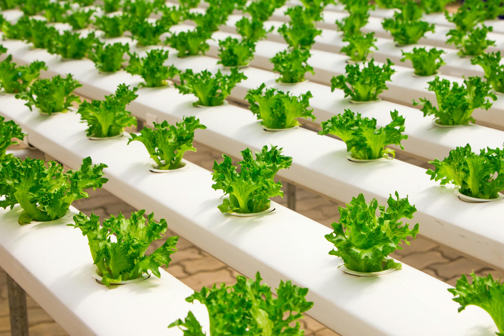

Welcome to Droneshwar's Organic Farming Journey
Discover the inspiring story of how Droneshwar is embracing organic farming for a sustainable future, inspired by the vision of Param Pujya Guruvarya Madhav Swami.
Watch the Documentary Learn MoreKey Themes
Traditional Farming Heritage
Exploring the rich agricultural history of the village.

The Shift to Organic Practices
Understanding the reasons and motivations behind the transition.

Community-Driven Initiatives
Highlighting the collective efforts of the villagers.